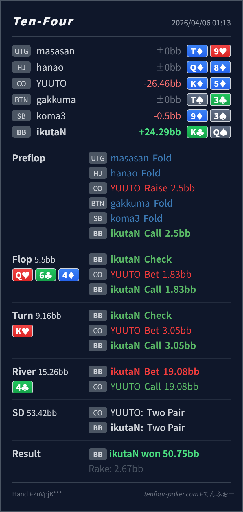

Preflop
良いKQo は BB defend として十分上側です。
主論点は、top two まで育った KQ を river の overbet value に置くべきかどうかです。当時の思考メモはないので、「強い hand は全部大きく打ちたい」という仮定で見ます。結論は、preflop defend から turn call まではかなり良く、再レビューの焦点は river size です。
K♣Q♠Q♥ 6♣ 4♦ / K♥ / 4♣125%pot の size です。top two まで行ったので strong hand は全部 overbet したくなる という仮定でレビューします。125%pot です。K♣Q♠2.5BB, BB callQ♥ 6♣ 4♦ / K♥ / 4♣1.83BB, BB call3.05BB, BB call19.08BB, CO call
良いKQo は BB defend として十分上側です。
Q♥ 6♣ 4♦良い
Hero はトップペアで十分続行でき、raise を急ぐ必要はありません。
K♥良い
Hero は top two に改善し、かなり強いですが、相手レンジを降ろし切るより残したい hand でもあります。
4♣ベットは良いがサイズ大きめ
Hero の KQ は value bet 自体は良いですが、125%pot に置くには少し強さが足りません。
| 論点 | その場で置きがちな見立て | どこがズレたか | 次回の基準 |
|---|---|---|---|
| turn の top two | 強いので raise して保護したくなる | turn の small barrel には bluff や thin value も残り、call の方が相手レンジを広く残せます。 | strong hand でも raise すると何を降ろしてしまうか を先に見る |
| river の overbet | top two まで行ったので最大 size で value を取りたくなる | KQ は十分強い一方、paired river の overbet rangeに置くには少し中間寄りです。しかも相手の Kx/Qx コールを一部 block します。 | river size は hand の絶対強度ではなく、その size の value range にどれだけ向くか で決める |
| ストリート | その時点の見え方 | 判断の焦点 | 評価 | 推奨 |
|---|---|---|---|---|
| Preflop | CO open range は broadway、suited Ax、middle pair、suited connector を広く含みます。 | KQo は BB defend として十分上側です。 | 良い | ここは call でよいです。 |
Flop Q♥ 6♣ 4♦ | CO の小さい c-bet には Qx, overpair, A-high, backdoor 付き air が広く残ります。 | Hero はトップペアで十分続行でき、raise を急ぐ必要はありません。 | 良い | check-call が自然です。 |
Turn K♥ | CO の small barrel には Kx, Qx, AA/JJ/TT, draw, air の一部が残ります。 | Hero は top two に改善し、かなり強いですが、相手レンジを降ろし切るより残したい hand でもあります。 | 良い | call で十分です。 |
River 4♣ | CO の turn bet-call range は Kx, Qx, overpair の一部、まれな slowplay に寄ります。 | Hero の KQ は value bet 自体は良いですが、125%pot に置くには少し強さが足りません。 | ベットは良いがサイズ大きめ | 50-75%pot 前後の方が取りやすく、overbet は trips 以上や一部 bluff に寄せたいです。 |
どの強さの hand をどの size に置くか が学びどころです。KQ は十分強いので value は取りたいですが、paired river の overbet に置くには少し中間寄りです。強い hand を全部大きく打つ から一段整理するとさらに良くなります。Kx を広く降ろすなら、KQ の overbet は取り逃しになりやすく、小さめ value の方が実戦EVが出やすいです。Kx を素直に降ろさない相手には、今回のような厚い river value も十分機能します。